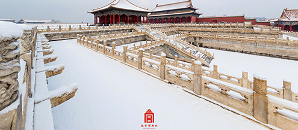

scroll
网易云音乐歌曲《推开世界的门》
- 我们这群人，苦没有真正的苦过、爱没有用力爱过
- 每天受着信息大潮的冲击、三观未定又备受曲折、贫穷不再是正义、又妄图不让金钱成为唯一的追求
- 过早看到了更大的世界、勤奋却又不过三天、热血透不过键盘和屏幕、回忆止于游戏和高考
- 像一群没有根的孩子、在别人的经历和精神里吵闹
年に一度の特別拝観
秘仏御本尊 木造阿弥陀如来立像
11月15日
仏像
開創以来の御本尊・阿弥陀如来立像をはじめ、
さまざまな仏様を拝観していただけます。
史料としても貴重な「故宫縁起」、「大涅槃図」「観経曼荼羅」などの
寺宝を所蔵しています。
東山三十六峰を借景とした枯山水「涅槃の庭」とモダンな「随縁の庭」で
静寂を感じていただけます。
江戸時代に再建された本堂（重文）や三重塔など、
建造物の見どころをご紹介します。
故宫の四季 Photogallery
春 / spring
夏 / summer
秋 / autumn

冬 / winter
2298421427@qq.com 故宫的四季 -- 夏令时
Tel 16683083086 (9:00〜18:00)